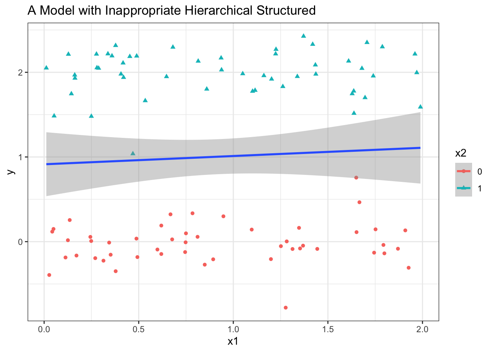
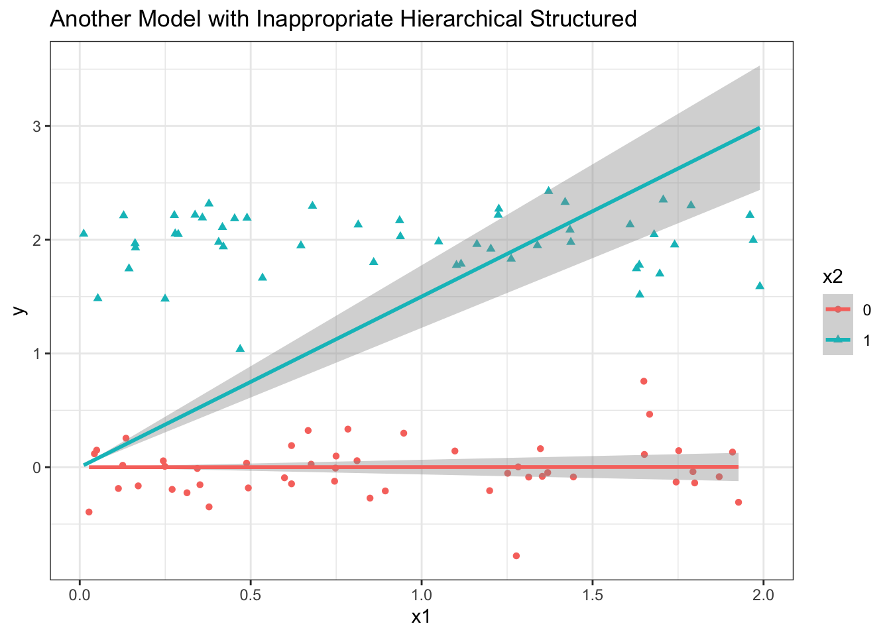

So far we have assumed that we know what variables should be included in a regression model. We’ve focused on specification and interpretation of the linear regression model and regression diagnostics for testing if we have the correct functional form or verifying the underlying assumptions.
However, we might not be sure which variables should be included in the model to begin with.
Model selection will be dependent on the study design and objectives.
Interest could be on:
The association between an outcome and some predictor(s), where we would want to make sure that:
The estimates are not impacted by confounding.
We are not oversimplifying these associations by ignoring important effect modification.
We have a parsimonious model for interpretability.
Parsimony refers to the principle of preferring the less complex model that performs just as well to a more complex model.
If our goal is prediction, we would want to make sure that
We have identified the important predictors of the outcome.
The selected set of regressors minimizes prediction error.
Less interested in causal inferences.
And to be careful of overfitting
In all situations, it is important that the model be as parsimonious as possible:
Interpretation becomes more complex for larger models;
Unnecessary variables may increase the variability of \(\hat \beta\) because they waste degrees of freedom without increasing SSR or decreasing SSE.
This is because \(\widehat{\text{Var}}(\hat \beta) = MSE(X'X)^{-1}\) and \(MSE = SSE/(n-p-1)\), so adding useless variables will decrease the denominator while leaving the SSE unchanged, thus inflating the MSE.
Multicollinearity can cause problems in estimation.
However, we don’t want the model to be so overly simplistic that it yields biased estimates.
Hierarchically Well Formulated Models
We should always consider hierarchically well formulated models.
A model is said to be hierarchically well formulated when all lower order components of any term are included in a model.
That is, all main effects should be included in models containing two-way interactions.
Similarly, the appropriate two-way interactions need to be included in models which contain three-way interactions.
library(tidyverse)
── Attaching core tidyverse packages ──────────────────────── tidyverse 2.0.0 ──
✔ dplyr 1.1.2 ✔ readr 2.1.4
✔ forcats 1.0.0 ✔ stringr 1.5.0
✔ ggplot2 3.4.2 ✔ tibble 3.2.1
✔ lubridate 1.9.2 ✔ tidyr 1.3.0
✔ purrr 1.0.1
── Conflicts ────────────────────────────────────────── tidyverse_conflicts() ──
✖ dplyr::filter() masks stats::filter()
✖ dplyr::lag() masks stats::lag()
ℹ Use the conflicted package (<http://conflicted.r-lib.org/>) to force all conflicts to become errors
x2 <-rbinom(n =100, size =1, prob = .5)x1 <-runif(n =100, min =0, max =2) y <- x2*2+rnorm(n =100, sd = .25)ggplot(data.frame(x1 = x1, x2 =factor(x2), y = y),aes(x = x1,y = y,color = x2,shape = x2 )) +geom_point() +geom_smooth(method ='lm', aes(group =1)) +theme_bw() +ggtitle("A Model with Inappropriate Hierarchical Structured")
`geom_smooth()` using formula = 'y ~ x'
Warning: The following aesthetics were dropped during statistical transformation:
colour, shape
ℹ This can happen when ggplot fails to infer the correct grouping structure in
the data.
ℹ Did you forget to specify a `group` aesthetic or to convert a numerical
variable into a factor?

df <-data.frame(x1 = x1, x2 =factor(x2), y = y)ggplot(df,aes(x = x1,y = y,color = x2,shape = x2 )) +geom_point() +geom_smooth(data = df, method ='lm', formula = y ~0+ x) +theme_bw() +ggtitle("Another Model with Inappropriate Hierarchical Structured")

Causal Selection
Ideally, the primary piece of model building and model selection (choosing what terms to include) should be substantive knowledge.
On a causal DAG, an association between two variables (exposure/treatment) and Y (outcome) can arise in 3 ways:
\(A\) causes \(Y\):
Confounding: Common causes of variables considered in the model that are not conditioned on.
Collider: Variables that have a common effect on another variable which is conditioned on.
In the case of confounders, we should adjust for them. On the other hand, we should not adjust for colliders (which creates collider stratification bias).
Another scenario we might be interested in is mediation.
Conditioning on a mediator will attenuate the observed effects.
If one fits a model like \(Y \sim A + M\) the coefficient on \(A\) can be interpreted as the direct effect of \(A\) on \(Y\) not through \(M\).
Statistical Criteria
Some model selection criteria we might use are \(R^2\), Adjusted \(R^2\), or the Akaike Information Criterion (AIC).
Recall that \[R^2 \stackrel{def}{=} \frac{SSR}{SST} = 1 - \frac{SSE}{SST}.\]
The SSE will never go down as we add more predictors. More particularly, the SSE is exactly equivalent to the measure we try to minimize with respect to \(\beta\) (\(S(\beta)\)). As we add more degrees of freedom (or from a linear algebra perspective, adding more orthogonal vectors to the span of our prediction space), we are able to more closely fit the \(y\) values. Or in other words, if we add another predictor to the regression that adds no additional explanatory value, then the \(\hat \beta\) coefficient on that term can be set to 0 and we won’t increase \(S(\beta)\) at all.
Thus \(R^2\) has the undesirable property that adding more predictors will never decrease it.
Recall that adjusted \(R^2\) is
\[R^2_{adj} = 1 - \frac{MSE}{SST/(n-1)},\]
where using MSE instead of the SSE penalizes the addition of predictors that don’t improve model performance.
Akaike Information Criteria
AIC is a general variable selection criterion defined for any likelihood-based model. For a model with parameters \(\theta \in \mathbb R^d\) and log-likelihood \(\ell (\theta)\)
\[\ell(\hat \beta, \hat \sigma^2_{MLE}; y) = c - \frac{n}{2} \log(\hat \sigma^2_{MLE}) - \frac{n}{2}\] subtracting off the number of parameters \((p+1)\), and multiplying by \(-2\), we have that
\[AIC = n \log(SSE/n) + 2(p+1) + c.\]
From a set of candidate models, we could then select the model that leads to the lowest AIC.
Best subsets selection
We could use the best subset selection algorithm to fit separate models for each possible combination of the \(p\) predictors and try to pick the best.
Best subsets selection algorithm--------------------------------For j =1,...,p(a) Fit all (p choose j) models containing exactly j predictors.(b) Pick the best model from this set, i.e., the model with the highest R^2or lowest SSE. Call it M_j.EndAmong M_1,...,M_p, select the single best model as the one with the highestadjusted R^2or lowest AIC.
Exhaustive search for best subsets can be performed in R using the {leaps} package with the function leaps::regsubsets.
In addition to considering all model subsets, people have traditionally used automated algorithms for model building. Most commonly these include forward selection, backward elimination, stepwise selection.
These typically inflate Type I error rates by doing tons and tons of hypothesis tests.
For a discussion of these, see Harrell F.E. (2015) Regression Modeling Strategies.
Predictive Performance: Train vs. Test Error
In machine learning, model selection is usually aimed at obtaining good predictive performance (small amount of error in predictions).
Very flexible/complex models are common (not usually worried about interpretation!), so overfitting is a key concern.
They usually focus on a variant of the MSE defined as
When computed on the sample used to fit the model (or “training data”), by design MSE* always decreases as more predictors are added in linear models.
Thus we should evaluate and compare \(MSE^*\) of models when applied to data that is independent from the training data (“test data”).
Figure 2.9 from the Introduction to Statistical Learning
The black line in the left panel shows the true mean \(\mathbb E[Y|X]\). A linear model (orange), a spline model (blue) and a wildly wiggly model (green) are fit. On the right-hand-side, we see that the more complex models overfit the data and start to diverge in the test-data \(MSE^*\).
Because the data were generated, we know the “true” minimum possible MSE in the test dataset, indicated in the dashed line at \(Y=1\).
Model Selection Using Test Error
Suppose we have fitted candidate model(s) on the training data sample and collected new data. Let \(m = 1, ..., M\) index the observations in the test set and \(y_m^{new}\) and \(\hat y_m^{new}\) be their observed outcomes and predicted outcomes from a given model fit on the training data, respectively.
Usually we don’t have the ability to collect entirely new data to evaluate our models. A simple way to estimate the test error in this setting is to randomly split your one observed dataset into a training and testing and then use the same procedures as in the previous slide.
Disadvantages:
You lose samples from the training data.
Results could depend heavily on the choice of points held out of the model.
Questions:
How, in general, should one choose what data to hold out? Should it match the prediction problem, somehow?
Should one use test/train splitting to validate choice of model and then report on a model trained on the entire dataset?
K-Fold Validation
Divide the observations into \(K\) groups (“folds”) of roughly equal size.
Make \(K\) passes, where in pass \(k = 1, ..., K\), fold \(k\) is treated as a testing set and the rest is a training set.
Estimate the \(MSE_{testcv}^*\) as the average of the \(K\) estimates of \(MSE_{test}^*\) from each pass and compare \(MSE_{testcv}^*\) across candidate models.
Should one calculate dispersion (variance) metrics across the \(MSE_{testcv, k}^*\) measures? Because one could imagine that one may not want a model that has low \(\bar{MSE_{testcv}^*}\) but occasionally performs very poorly. This is essentially getting my wondering about reliability. Rachel’s suggestion is to measure the “MSE of the MSE” — here meaning the average squared deviation of the \(MSE^*_{k, testcv}\) from \(\bar{MSE_{k, testcv}^*}\).
Typical numbers for \(K\) are 5 or 10. One important special case is when \(K = n\), leave-one-out cross-validation.
# using a tidymodels approach to k-fold cross-validation: # https://www.tidymodels.org/start/resampling/ library(tidyverse)library(here)library(tidymodels)hers <- readr::read_csv(here::here("data/hers.csv"))hers_split <-initial_split(hers)hers_train <-training(hers_split)hers_test <-testing(hers_split)rf_mod <-rand_forest(trees =1000) %>%set_engine("ranger") %>%set_mode("prediction")
n-fold Validation and the PRESS Statistic
Clearly the DFFITS, Cook’s Distance, and jackknife residuals are related to \(n\)-fold cross validation (aka leave-one-out cross-validation).
The PRESS Statistic is defined
\[PRESS = \sum_{i=1}^n \left(Y_i - \underbrace{\hat Y_{i(-i)}}_{\substack{\text{prediction from a model} \\ \text{that doesn't include obs. } i}}\right)^2\]
PRESS is just \(n \times MSE_{testcv}^*\) from leave-one-out cross-validation.
As we have seen from other “delete-one” diagnostics, this can be computed from the original fit in linear models.
One can use the PRESS() function from the {MPV} package, which will compute the \(MSE\) from n-fold cross-validation.
Bias-Variance Tradeoff
As model complexity increases, test error initially decreases as we better approximate the true model form, and then we pass through an inflection point, after-which the model starts to overfit.
This is due to the bias-variance decomposition, i.e., that MSE can be decomposed as:
Formally, suppose that \(Y_i = f(x_i) + \varepsilon_i\) and we fit some model that gives us predictions \(\hat Y_i = \hat g(x_i).\) In this class, we usually have that \(\hat g(x_i) = x_i' \hat \beta\).
Then the expected squared error of the prediction for any test data point is
By the theory of Lagrange multipliers (Joseph-Louis Lagrange, 1735-1813) for constrained optimization, this is equivalent to minimizing the SSE with a penalty.
In particular the ridge regression coefficient estimates \(\beta_{\lambda}^R\) are the values that minimize
where \(\lambda \geq 0\) is a tuning parameter that relates to, but is not the same as \(s\).
The intuition is that the sum of squared terms drives the minimization to fit the data, but at the same time, the second summation penalizes the \(\beta_j\) coefficients towards zero.
Note that we usually want to standardize the \(x_j\) and do not want to shrink \(\beta_0\).
For fixed \(\lambda\), the solution \(\beta_{\lambda}^R\) to the ridge regression problem is given by
As \(\lambda \to 0, \, \hat\beta_\lambda^R \to \hat\beta_{OLS}\)
As \(\lambda \to \infty, \, \hat \beta_{\lambda}^R \to 0\) for all predictors except the intercept.
Typically one uses cross-validation techniques to determine the optimal value of \(\lambda\) according to pre-specified criteria.
As \(\lambda\) increases, the flexibility of the ridge regression fit decreases, leading to decreased variance but increased bias.
Thus ridge regression is a good option in situations where OLS estimates have high variance, including when:
\(p \approx n\) or \(p \geq n\)
High multicollinearity
Ridge regression also has substantial computational advantages over best subset selection.
It’s worth reflecting on when \(p \geq n\) happens (i.e., we have more potential predictors than observations). In situations like genetics where we have samples from populations, it’s straightforward to imagine that we could have genetic data from 100s or 1000s (or even 10s of 1000s), while the human genome is estimated to have something like ~20,000 protein-coding genes in it.